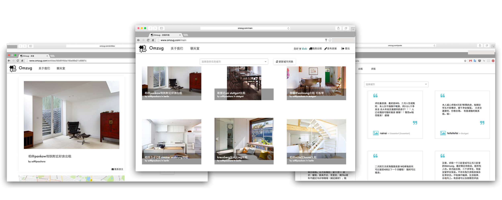
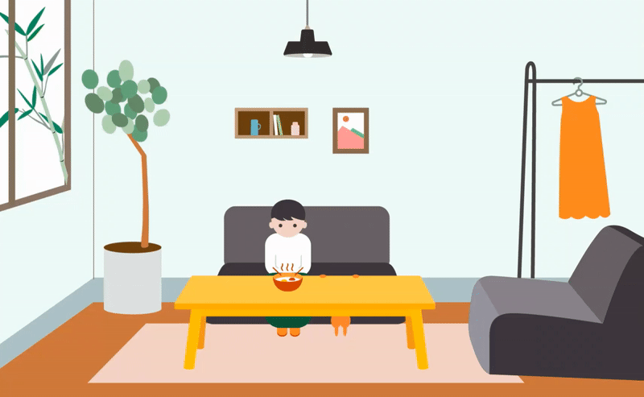

www.omzug.com
Tools:
Reactjs, Adobe Illustrator, Adobe After Effects, Material Design
Teamwork:
Xinyue Yang, Hanwen Cheng
Problem:
Chinese Students in Germany usually have difficulties finding private apartments. Besides applying for student dormitories,
which are always in short supply, we seldom have chances to get private flats for the reason of having no jobs and so on. Though there are some existing
chinese forums which exchanges information of flat resources, they are not specialized in renting issue.
In order to provide a clear and convenient renting platform, we decided to create a non-beneficial web application especially for
Chinese students. Taking german word "Umzug" (move), we named our website "Omzug".

I took "puzzle" as our logo, which stands for german 'Wohngemeinschaft' culture. The term "Wohngemeinschaft" ("WG")
means the coexistence of several independent, usually unrelated persons in an apartment.
Common rooms such as bathrooms, kitchens or even a living room are shared.
There are two main functions, respectively providing for a rent and requesting for a rent. We use Card design to
make it modularized and expandable. The informations for every house are minimized but essential, there's only one filter
for city catalog too. The interface for requesting a rent, I applied 'quotation marks' as a feature, referring it as a dialog
or an utter, which expresses an individual and urgent feeling.

This is my first experience working together with engineer, after I learned HTML and CSS basics, we started
right after to build our web application with Reactjs. I became the co-founder as well as designer of Omzug. It's grounded
in 2016 in Berlin, our team are just two of us, and it's a surprising feeling to see it from zero to a finished digital product after everyday's intensive work.
I learned a lot about how to communicate with an engineer as a designer. It's interesting to see what codes are behind those
screen pixels. And how amazing it is, to have it online.
Besides, I worked with Adobe After Effects for the first time. I did some practices to combine Illustrotor and After Effects, therefore
to make some motion graphics or animated Gifs, even just some simple rotates and positioning can make them much more interesting.
